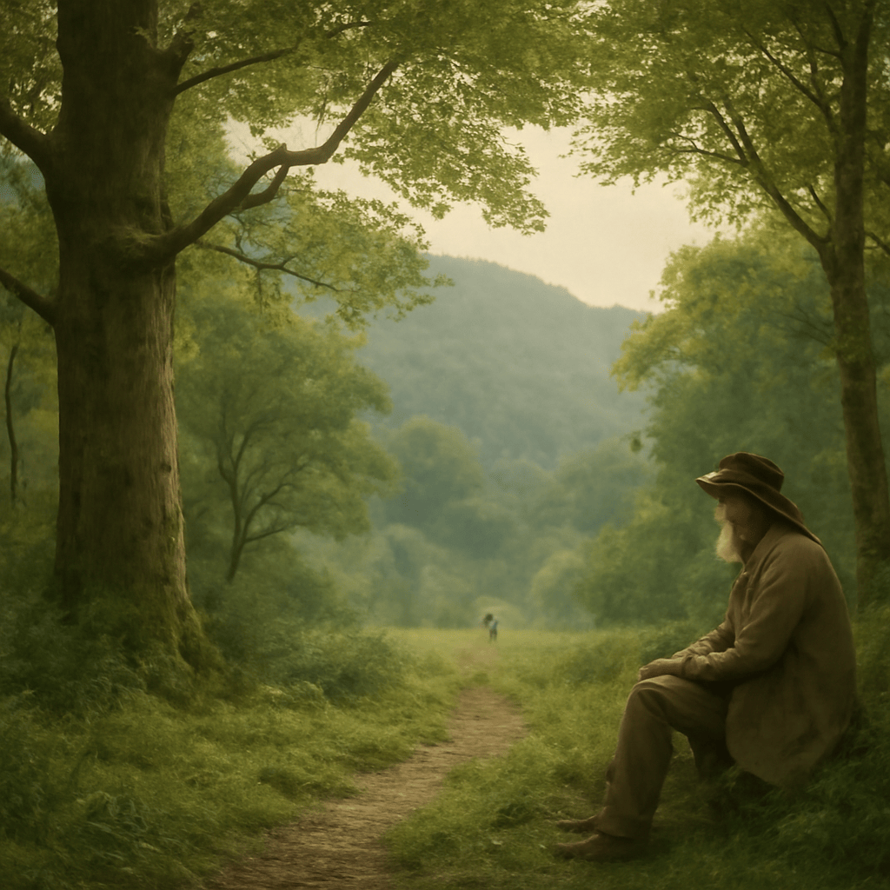

2025/08/09(土)
今日は綾羽高校の森をゆっくり歩きながら、自然の不思議と恵みに触れた一日じゃった。森の静けさのなかで、カッコウが「カッコー、カッコー」と鳴く声が響き渡り、その托卵という特異な生き方に改めて感心したものよ。そいつは他の鳥の巣に卵をこっそり置くことで、自分は育児の重荷を免れる賢さじゃな。カワセミも水辺に静かに佇み、その鮮やかな青とオレンジの羽が光を浴びて美しかった。ワシはその小さな羽音も聞こえるほど、じっと見守ったんじゃ。散歩の途中には、甘い桃もひとつ味わう。ジューシーな果実の旨味は自然の恵みそのもので、口いっぱいに広がって心が和らいだよ。ただし食べ過ぎると腹がびっくりするから、控えめにしたがな。最後にエミューの大きな姿も観察できて、飛ばずに暑さをしのぐために羽を使うと聞き、また一つ自然の妙を知った。これらすべてが、綾羽高校の豊かな自然と生き物たちからの贈り物じゃな。今日も森の仲間たちに感謝じゃよ。
